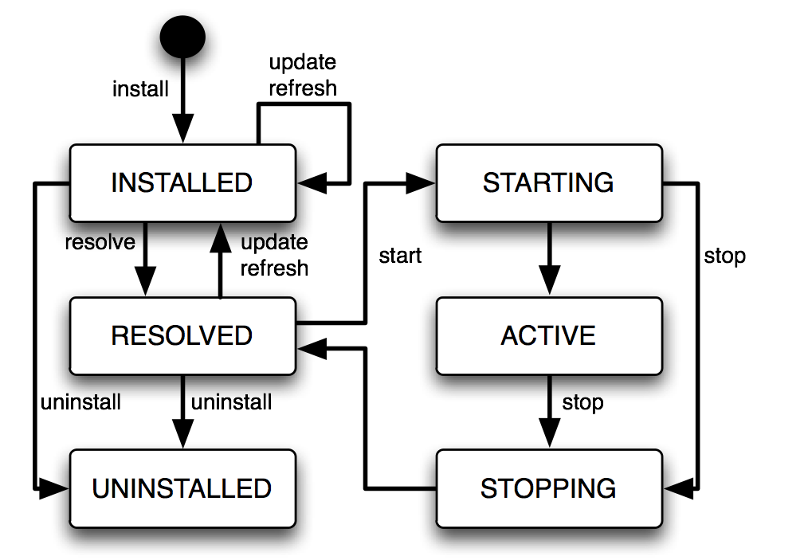
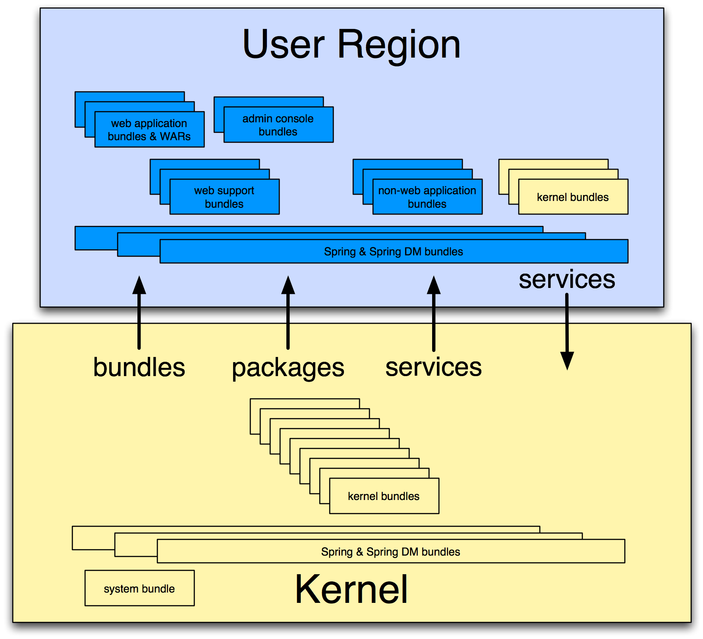

Concepts
This chapter introduces some basic concepts that will help you to use Virgo.
Modular Runtimes and Applications
Virgo for Apache Tomcat, Virgo Jetty Server, Virgo Kernel and Virgo Nano are Java runtimes each composed of a collection of modules and supporting applications which are also composed of a collection of modules. Modules can be shared between applications and multiple versions of modules can co-exist.
OSGi Concepts
Modules in Virgo are represented using a standard Java module system known as OSGi. Modules in OSGi are known as bundles. Bundles consist of programs and resources organised by Java package together with metadata which declares imported and exported packages. A bundle exports a package to make the corresponding programs and resources available for use by other bundles. A bundle imports a package to use the corresponding programs and resources of another bundle.
Representing a program as a collection of bundles makes it easier for the programmer to manage it and modify it and for teams of programmers to divide responsibilities between themselves. A bundle is similar to a Java class in this respect. Design principles similar to those for organising data and programs into classes can be applied to organising applications into bundles.
An industry consortium known as the OSGi Alliance develops OSGi specifications, reference implementations, and compliance tests. Virgo is built on the Equinox OSGi framework which is also the reference implementation for the OSGi framework specification.
Bundles
Each bundle is stored in a file which conforms to the JAR file format and
can contain Java classes, a manifest (in META-INF/MANIFEST.MF),
and further resource files.
The OSGi framework enables bundles to be installed and run.
OSGi identifies bundles "by name" and "by identifier" (id).
The symbolic name and
version of a bundle are attributes of the bundle which identify the bundle.
A bundle declares its symbolic name and version
in its manifest (a file called MANIFEST.MF) like this:
Bundle-SymbolicName: org.foo.bundle
Bundle-Version: 1.2.3.BUILD-2009-06-04Additionally, the OSGi framework
assigns a distinct number, known as a bundle id, to each bundle
as it is installed. Bundles may be referred to "by identifier" using this number.
The OSGi framework itself resides in a
bundle with bundle id 0.
The dependencies between bundles are expressed statically in terms of packages and
dynamically in terms of services. A package is familiar to Java programmers.
For example, a Java program may depend on a class org.foo.X,
from package org.foo, and a bundle
containing that program
would either need to contain org.foo.X or depend on the
package org.foo.
Package dependencies are specified in the bundle manifest, for example:
Import-Package: org.fooA bundle which provides a package for use by other bundles must export the package in its manifest. For example:
Export-Package: org.fooThe OSGi framework ensures that a given bundle’s package dependencies can be satisfied before the bundle runs. This process is known as resolution.
After a bundle is resolved, its classes and resources are available for loading. In OSGi, bundles and their packages do not appear on the application classpath. Instead, each bundle has a class loader which loads its own classes and loads classes belonging to each of its imported packages by deferring to the bundle class loader that exports the package.
Life Cycle
The OSGi framework manages the life cycle of each bundle. A bundle is first of all installed and will be in the INSTALLED state. If a request is made to start the bundle, the OSGi framework resolves the bundle and, if resolution was successful, will subsequently move the bundle to the ACTIVE state. If a request is made to stop the bundle, the OSGi framework will move the bundle back to the RESOLVED state. A request may then be made to uninstall the bundle.
While the bundle is INSTALLED, ACTIVE or RESOLVED, it may be updated to pick up some changes. These changes are not detected by bundles which were depending on the bundle before it was updated. A "refresh packages" operation may be performed to ripple the changes out to those bundles. (See Services concepts.) The life cycle of a bundle can be summarised by a state transition diagram. This diagram shows some more of the intermediate states of a bundle not described in the overview above:

Services
Bundles may publish Java objects, known as services, to a registry managed by the OSGi framework. Other bundles running in the same OSGi framework can then find and use those services. Services are typically instances of some shared Java interface. A bundle which provides a service need not then export the package containing the implementation class of the service.
For example, a bundle could export a package containing the interface
org.bar.SomeInterface, thus:
Export-Package: org.bar…implement the interface with a class SomeImpl:
package org.bar.impl;
class SomeImpl implements SomeInterface {
…
}…create an instance of SomeImpl and
then publish this instance (as an instance of the interface SomeInterface).
An OSGi framework publishes a number of standard services. For example, the Package Admin service provides the "refresh packages" life cycle operation mentioned above.
OSGi provides an API which can be used to publish and find services, but it is much simpler to use Blueprint to accomplish this. (See Gemini Blueprint.)
Versioning
OSGi allows different versions of bundles, packages, and several other entities, to co-exist in the same framework and provides some mechanisms for managing these versions.
Version Numbers
An OSGi version number consists of up to three numeric components, or exactly three numeric components followed by a string component. These components are separated by a period (“.”) and are called the major, minor, micro, and qualifier components, respectively.
For example, the version 2.4.1.ga has major component 2, minor component
4, micro component 1,
and a qualifier component ga. (There are restrictions on the characters that can appear in
a qualifier. For example: letters, digits, underscores and hyphens are allowed; periods and commas are not.)
Trailing components may be omitted along with their period (.). So, for example, the version
numbers 2, 2.0, and 2.0.0
all denote the same version. This example demonstrates that 0 is assumed if a numeric component is omitted,
and the empty string is assumed for an omitted qualifier.
Version Ranges
Dependencies on bundles and packages have an associated version range which is specified using an interval notation: a square bracket “[” or “]” denotes an inclusive end of the range and a round bracket “(” or “)” denotes an exclusive end of the range. Where one end of the range is to be included and the other excluded, it is permitted to pair a round bracket with a square bracket. The examples below make this clear.
If a single version number is used where a version range is required this does not indicate a single version, but the range starting from that version and including all higher versions.
There are three common cases:
-
A "strict" version range, such as
[1.2,1.2], which denotes that version and only that version. -
A "half-open" range, such as
[1.2,2), which has an inclusive lower limit and an exclusive upper limit, denoting version1.2.0and any version after this, up to, but not including, version2.0.0. -
An "unbounded" version range, such as
1.2, which denotes version1.2and all later versions.
Versioning Policies
A versioning policy is a way of using version numbers to indicate compatible and incompatible changes. OSGi does not mandate a particular versioning policy. Instead, a specific versioning policy may be implemented using version ranges. Strict and half-open version ranges are most useful in representing versioning policies. Unbounded version ranges can lead to problems as they (unrealistically) assume that compatibility will be preserved indefinitely.
For example, a conservative versioning policy might assume that any change, other than
in the qualifier component of a version, implies an incompatible
change to the object.
Such a policy would employ version ranges such as [1.2.1.beta,1.2.2)
which accept any version from 1.2.1.beta (inclusive) up to but not including
1.2.2 (exclusive).
Alternatively, a relaxed versioning policy might assume that only changes in the major component of
a version denote an incompatible change.
Such a policy would employ version ranges such as [1.2,2) to capture this.
The OSGi Alliance has published a Semantic Versioning white paper which provides some recommendations and guidance on versioning policies.
Bundle Version
Each bundle has a version.
The bundle’s version may be specified in the manifest using a
Bundle-Version header:
Bundle-Version: 1.4.3.BUILD-20090302
If not specified the bundle version is assumed to be 0.
Package Version
Each exported package has a version. The exported package’s version may be specified on the Export-Package manifest header. For example
Export-Package: org.foo;version="2.9",org.bar;version="1"
exports two packages: org.foo, at version 2.9.0 and
org.bar, at version 1.0.0.
If the version attribute is omitted, the version is assumed to be 0.
Each package import has a version range.
The package import version range may be specified on the Import-Package manifest header.
If interval notation is used, the version range must be enclosed in double quotes, for example:
Import-Package: org.foo;version="[2,3)",org.bar;version="[1,1]"</programlisting>
seeks to import a package org.foo in the range [2.0.0,3.0.0) and a package
org.bar with the (exact) version 1.0.0.
If a version range is not specified on an import, the range 0 is assumed, meaning that
any version of this package would satisfy the import.
Bundle Manifest Version
Bundle manifests have a version which is 1 by default,
indicating OSGi Release 3 semantics.
Virgo is based on OSGi Release 4 and therefore expects bundle manifests to be
at version 2, indicating OSGi Release 4 semantics.
The bundle manifest’s version should be specified on the Bundle-ManifestVersion manifest header, exactly as follows:
Bundle-ManifestVersion: 2
Manifest Version
Manifests themselves also have a version which must be specified as 1.0.
This is not an OSGi definition but part of the
(JAR file specification).
Manifest-Version: 1.0
Blueprint Concepts
Spring DM (the predecessor of Gemini Bluprint) is a project which enables services to be published and consumed using descriptions written in XML.
The XML descriptions reside in files with extension .xml in the
bundle’s META-INF/spring sub-directory.
To publish a service, an <osgi:service> tag is used, specifying the
implementation class of the service and the interface class to be used.
Spring DM constructs an instance of the implementation class and
publishes that instance in the OSGi service registry under the interface when the bundle is started.
To consume a service, an <osgi:reference> tag is used and the
service may be passed into other Spring beans using Spring’s dependency
injection facilities.
Spring DM automatically creates proxies for OSGi services so that the actual service object may come and go at runtime. If a service disappears, any proxies to the service will wait for the service to re-appear. This effect is known as damping.
When a bundle is started, Spring DM builds the application contexts specified by the XML descriptions, creates proxies for the specified services, and publishes the specified services to the OSGi service registry.
When a bundle is stopped, Spring DM retracts any services it published on behalf of the bundle and closes the bundle’s application contexts. Virgo turns off damping of a service proxy while the proxy’s application context is being closed.
Spring DM was contributed to Eclipse as the Gemini Blueprint project. Virgo has Gemini Blueprint built-in.
Gemini Blueprint supports both Spring DM and Blueprint programming models. Blueprint, known formally as the "OSGi Blueprint Container", provides some of the basic facilities of Spring DM, including all those just mentioned, but in an OSGi standard form. See [furtherreading] for the Blueprint specification.
Virgo Concepts
|
Note
|
This section is not relevant for Virgo Nano. |
The Provisioning Repository
The Virgo provisioning repository contains artifacts and metadata indexed by the artifact type, name, and version. There are three kinds of repository: external, watched, and remote. Repositories are passive in the sense that changes to repository content do not cause artifacts to be deployed into Virgo, refreshed, or undeployed.
Artifact Types
In addition to the standard OSGi bundle, artifact types in Virgo include configuration (properties file), PAR, plan, and library. PARs, plans, and libraries are discussed in Grouping Bundles.
External Repositories
External repositories are created by scanning a directory which contains artifacts, possibly in nested directories. The repository configuration specifies a pattern which says which files should be treated as artifacts. After the repository is created, changes to the directory do not affect the repository content.
Virgo’s default repository configuration, in configuration/org.eclipse.virgo.repository.properties, specifies an external repository created from the
repository/ext directory.
Watched Repositories
Watched repositories are created by scanning a directory which contains artifacts but no nested directories. All files in the directory are treated as artifacts. The directory is re-scanned periodically and the interval between re-scans is specified in the repository configuration. The directory is also re-scanned when an artifact is deployed into Virgo. Changes detected by re-scanning are reflected in the repository content. Note that changing the content of a watched repository does not cause artifacts to be deployed into Virgo, refreshed, or undeployed.
Virgo’s default repository configuration specifies a watched repository based on the contents of the repository/usr directory.
Remote Repositories
A remote repository refers to a repository hosted by a Virgo instance sometimes known as a repository server.
The hosted repository is configured using the file configuration/org.eclipse.virgo.apps.repository.properties and may be either an external or a watched
repository.
The remote repository is accessed by a Virgo instance sometimes known as a repository client. The repository client is normally a different instance of Virgo to the instance hosting the repository, but it can be the same instance (which is handy for testing). The remote repository periodically downloads its index from the hosted repository. The period between downloads may be configured in the repository configuration. The remote repository also caches artifacts which have secure hashes associated with them in the hosted repository. Only bundles currently have secure hashes associated with them. The secure hash is used to determine when a cached artifact is stale and needs to be freshly downloaded.
Repository Chains
The Virgo repository is configured as a chain of external, watched, and remote repositories. The chain is a list which is searched in the configured order. The effect of this search order is that an artifact with a given type, name, and version which appears in more than one repository in the chain is only accessed from the first repository in the chain in which it appears. Abstractly, the repository chain behaves as a single repository, but its content may mutate in quite a different way to the content of an individual external, watched, or remote repository.
Grouping Bundles
Virgo provides a way of grouping together a collection of OSGi bundles and other artifacts which comprise a single application. These artifacts are placed in a JAR file with extension “.par”. This is called a PAR file.
All the bundles in a PAR file are resolved together and so mutual dependencies are permitted.
At runtime a PAR file provides a scope in the sense that bundles inside the PAR file may depend on packages and services outside the PAR file, but bundles outside the PAR file may not depend on packages and services provided by the PAR file.
Virgo also provides the plan artifact as another way of grouping bundles and other artifacts into an application. A plan is a file (in XML format) listing a collection of artifacts. The artifacts referred to by a plan reside in the Virgo provisioning repository.
In addition to PARs and plans, which are used for deploying groups of artifacts, Virgo provides libraries as a way of grouping together a collection
of bundles that can then be imported into an application using the Virgo-specific Import-Library manifes header.
Kernel and User Region
Conceptually, VTS can be divided into two separate subsystems, one of which actually encompases the other:
-
The kernel, which is the heart of VTS. It makes up most of VTS, except for the part that supports Web applications. In other words, the kernel provides full OSGi modular support for your applications, as long as they are not Web-based. See The Virgo Kernel for additional information.
-
The user region is the subsystem that manages user applications. It deliberately isolates the kernel from both your applications and those of the VTS itself, such as the Admin Console, which protects the kernel from interference by applications. See The User Region for additional information.
When you download and install Virgo for Apache Tomcat you get both the kernel and web server support (configured in the user region). You can also download and use the kernel on its own if you do not plan on deploying Web applications or using the web-based Admin Console and you’ll get the kernel and a minimal user region (with no web support).
The following graphic shows how the kernel and user region make up VTS:

The Virgo Kernel
The Virgo Kernel encapsulates almost all of VTS except for the deployment of Web applications. In sum, the kernel provides the following VTS features:
-
Deployment of non-Web artifacts, such as OSGi bundles, PARs, plans, and configuration artifacts.
-
Local and hosted repositories
-
Scoping
-
Hot deployment
-
User region
-
Auto-provisioning
-
System and application tracing and dump support
-
Spring beans and Blueprint support
See Configuring VTS for details about configuring the kernel to better suit your environment.
The User Region
The user region isolates the kernel from deployed applications, including both your own user applications and the user-oriented VTS applications such as the Admin Console. This means that the kernel is mostly invisible to applications and to application management. This is because most of the kernel bundles are not installed in the user region (apart from a few needed for region management). The necessary function to support the kernel runs in the OSGi framework, but the user region applications cannot see it, except for the services that are normally offered.
This isolation has many benefits. For example, it is not necessary for the kernel and user applications to use the same version of the Spring Framework. In fact the kernel installs only those parts of the Spring Framework that it needs. If you update the kernel, it is far less likely that you will also need to upgrade or adjust the applications to accomodate a new version of the kernel. The kernel implementation is therefore much more stable and resilient and applications are much more likely to survive kernel upgrades between releases. When you install VTS, the kernel creates a single user region. The kernel and the user region are configured independently of each other; see Configuring VTS for details.
Finally, the isolation provided by the user region together with scoped applications and plans solve common dependency problems that occur when using OSGi.
p2 Concepts
At EclipseCon 2011 there was a great introductory presentation on p2. It gives a nice overview of the whole provisioning system. You can find it recorded here(video).
This blog post provides some background on why p2 was created as well as a brief overview of what p2 repositories are and how this relates to a runtime.
This presentation(slides only) sheds light on more advanced p2 features and turns our attention to its extension points.
Finally, the p2 wiki also provides both getting started guides as well as information on more advanced features.